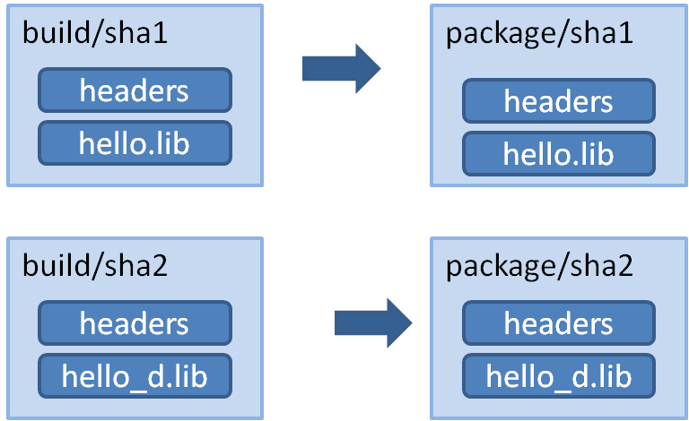

Packaging approaches¶
Package recipes have three methods to control the package’s binary compatibility and to implement different packaging approaches: package_id(), build_id() and package_info().
The above methods let package creators follow different package approaches to choose the best fit for each library.
1 config (1 build) -> 1 package¶
A typical approach is to have one configuration for each package containing the artifacts. In this approach, for example, the debug pre-compiled libraries will be in a different package than the release pre-compiled libraries.
So if there is a package recipe that builds a “hello” library, there will be one package containing the release version of the “hello.lib” library and a different package containing a debug version of that library (in the figure denoted as “hello_d.lib”, to make it clear, it is not necessary to use different names).
{kind=link}
In this approach, the package_info() method can just set the appropriate values for consumers,
to let them know about the package library names, and necessary definitions and compile flags.
class HelloConan(ConanFile):
settings = "os", "compiler", "build_type", "arch"
def package_info(self):
self.cpp_info.libs = ["mylib"]
It is very important to note that it is declaring the build_type as a setting. This means that a
different package will be generated for each different value of such setting.
The values that packages declare here (the include, lib and bin subfolders are already
defined by default, so they define the include and library path to the package) are translated
to variables of the respective build system by the used generators. That is, if using the cmake
generator, such above definition will be translated in conanbuildinfo.cmake to something like:
set(CONAN_LIBS_MYPKG mylib)
# ...
set(CONAN_LIBS mylib ${CONAN_LIBS})
Those variables, will be used in the conan_basic_setup() macro to actually set cmake relevant
variables.
If the developer wants to switch configuration of the dependencies, he will usually switch with:
$ conan install -s build_type=Release ...
# when need to debug
$ conan install -s build_type=Debug ...
These switches will be fast, since all the dependencies are already cached locally.
This process has some advantages: it is quite easy to implement and maintain. The packages are of minimal size, so disk space and transfers are faster, and builds from sources are also kept to the necessary minimum. The decoupling of configurations might help with isolating issues related to mixing different types of artifacts, and also protecting valuable information from deploy and distribution mistakes. For example, debug artifacts might contain symbols or source code, which could help or directly provide means for reverse engineering. So distributing debug artifacts by mistake could be a very risky issue.
Read more about this in package_info().
N configs -> 1 package¶
It is possible that someone wants to package both debug and release artifacts in the same package, so it can be consumed from IDEs like Visual Studio changing debug/release configuration from the IDE, and not having to specify it in the command line. This type of package will include different artifacts for different configurations, like both the release and debug version of the “hello” library, in the same package.

Note
A complete working example of the following code can be found in a github repo. You should be able to run:
$ git clone https://github.com/memsharded/hello_multi_config
$ cd hello_multi_config
$ conan create . user/channel -s build_type=Release
$ conan create . user/channel -s build_type=Debug --build=missing
Creating a multi-configuration Debug/Release package is not difficult, see the following example using CMake.
The first step is to remove build_type from the settings. It will not be an input setting, the
generated package will always be the same, containing both Debug and Release artifacts.
The Visual Studio runtime is different for debug and release (MDd or MD), so if we are fine
with the default runtime (MD/MDd), it is also good to remove the runtime subsetting in the
configure() method:
class Pkg(ConanFile):
# build_type has been ommitted. It is not an input setting.
settings = "os", "compiler", "arch"
def configure(self):
# it is also necessary to remove the VS runtime
if self.settings.compiler == "Visual Studio":
del self.settings.compiler.runtime
def build(self):
cmake = CMake(self)
if cmake.is_multi_configuration:
cmmd = 'cmake "%s" %s' % (self.source_folder, cmake.command_line)
self.run(cmmd)
self.run("cmake --build . --config Debug")
self.run("cmake --build . --config Release")
else:
for config in ("Debug", "Release"):
self.output.info("Building %s" % config)
self.run('cmake "%s" %s -DCMAKE_BUILD_TYPE=%s'
% (self.source_folder, cmake.command_line, config))
self.run("cmake --build .")
shutil.rmtree("CMakeFiles")
os.remove("CMakeCache.txt")
In this case, we are assuming that the binaries will be differentiated with a suffix, in cmake syntax:
set_target_properties(mylibrary PROPERTIES DEBUG_POSTFIX _d)
Such a package can define its information for consumers as:
def package_info(self):
self.cpp_info.release.libs = ["mylibrary"]
self.cpp_info.debug.libs = ["mylibrary_d"]
This will translate to the cmake variables:
set(CONAN_LIBS_MYPKG_DEBUG mylibrary_d)
set(CONAN_LIBS_MYPKG_RELEASE mylibrary)
# ...
set(CONAN_LIBS_DEBUG mylibrary_d ${CONAN_LIBS_DEBUG})
set(CONAN_LIBS_RELEASE mylibrary ${CONAN_LIBS_RELEASE})
And these variables will be correctly applied to each configuration by conan_basic_setup()
helper.
In this case you can still use the general, not config-specific variables. For example, the include directory, set by default to include, is still the same for both debug and release. Those general variables will be applied for all configurations.
Important
The above code assumes that the package will always use the default Visual Studio runtime (MD/MDd). If we want to keep the package configurable for supporting static(MT)/dynamic(MD) linking with the VS runtime library, some extra work is needed. Basically:
- Keep, the
compiler.runtimesetting, i.e. do not implement theconfigure()method removing it - Don’t let the
CMakehelper define theCONAN_LINK_RUNTIMEenv-var to define the runtime, because being defined by the consumer it would be incorrectly applied to both Debug and Release artifacts. This can be done with acmake.command_line.replace("CONAN_LINK_RUNTIME", "CONAN_LINK_RUNTIME_MULTI")to define a new variable - Write a
package_id()method that defines the packages to be built, one for MD/MDd, and other for MT/MTd - In CMakeLists.txt, use the
CONAN_LINK_RUNTIME_MULTIvariable to correctly setup up the runtime for debug and release flags
All these steps are already coded in the repo https://github.com/memsharded/hello_multi_config and commented out as “Alternative 2”
Also, you can use any custom configuration you want, they are not restricted. For example, if your package is a multi-library package, you could try doing something like:
def package_info(self):
self.cpp_info.regex.libs = ["myregexlib1", "myregexlib2"]
self.cpp_info.filesystem.libs = ["myfilesystemlib"]
These specific config variables will not be automatically applied, but you can directly use them in your consumer CMake build script.
Note
The automatic conversion of multi-config variables to generators is currently only implemented
in the cmake and txt generators. If you want to have support for them in another
build system, please open a GitHub issue for it.
N configs (1 build) -> N packages¶
It’s possible that an already existing build script is building binaries for different configurations at once, like debug/release, or different architectures (32/64bits), or library types (shared/static). If such build script is used in the previous “Single configuration packages” approach, it will definitely work without problems, but we’ll be wasting precious build time, as we’ll be re-building the whole project for each package, then extracting the relevant artifacts for the given configuration, leaving the others.
It is possible to specify the logic, so the same build can be reused to create different packages, which will be more efficient:

This can be done by defining a build_id() method in the package recipe that will specify the
logic.
settings = "os", "compiler", "arch", "build_type"
def build_id(self):
self.info_build.settings.build_type = "Any"
def package(self):
if self.settings.build_type == "Debug":
#package debug artifacts
else:
# package release
Note that the build_id() method uses the self.info_build object to alter the build hash. If
the method doesn’t change it, the hash will match the package folder one. By setting
build_type="Any", we are forcing that for both Debug and Release values of build_type, the
hash will be the same (the particular string is mostly irrelevant, as long as it is the same for
both configurations). Note that the build hash sha3 will be different of both sha1 and
sha2 package identifiers.
This doesn’t imply that there will be strictly one build folder. There will be a build folder for every configuration (architecture, compiler version, etc). So if we just have Debug/Release build types, and we’re producing N packages for N different configurations, we’ll have N/2 build folders, saving half of the build time.
Read more about this in build_id().